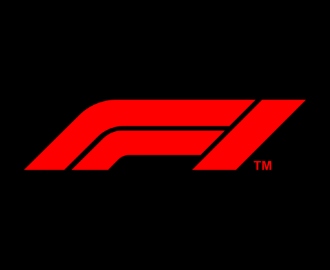
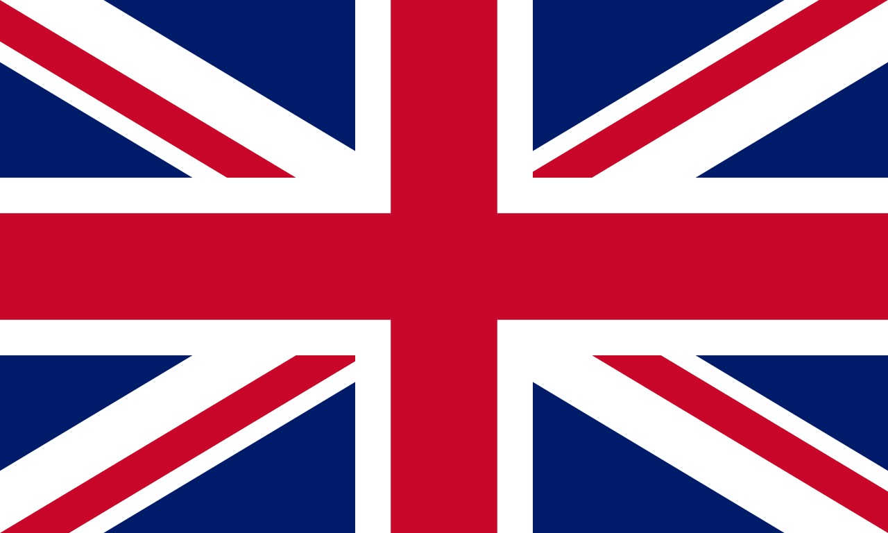
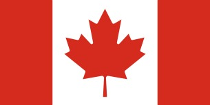
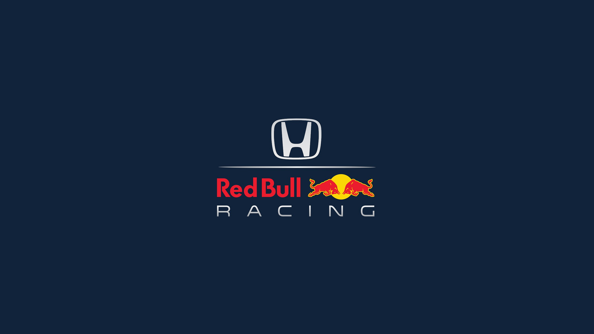
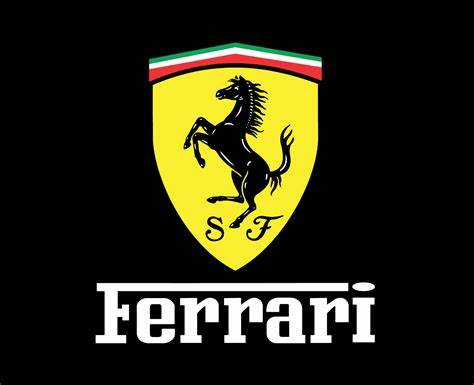
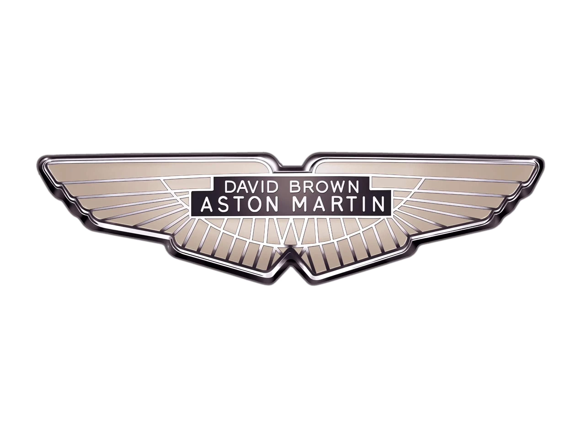
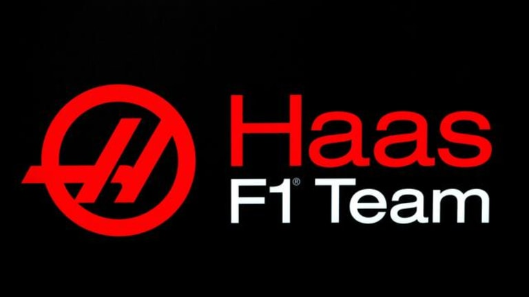

Campeonato Mundial de Fórmula 1
2025 - FIA 
Nome do Piloto
|
Nacionalidade
|
Posição
|
Pontução Total
|
Lando Norris
|
 |
1° Lugar |
43 Pontos |
Max Verstappen
|
|
2° Lugar |
30 Pontos |
George Russell
|
|
3° Lugar |
30 Pontos |
Oscar Piastri
|
|
4° Lugar |
27 Pontos |
Kimi Antonelli
|
|
5° Lugar |
16 Pontos |
Charles Leclerc
|
|
6° Lugar |
14 Pontos |
Alexandre Albon
|
|
7° Lugar |
12 Pontos |
Lewis Hamilton
|
|
8° Lugar |
9 Pontos |
Lance Stroll
|
 |
9° Lugar |
8 Pontos |
Esteban Ocon
|
 |
10° Lugar |
7 Ponto |
| 1 GP AUSTRALIA |
| Classificação |
Nome do piloto |
Pontuação |
| 1° Lugar |
Lando Norris |
25 Pontos |
| 2° Lugar |
Max Verstappen |
18 Pontos |
| 3° Lugar |
George Russell |
15 Pontos |
| 4° Lugar |
Kimi Antonelli |
12 Pontos |
| 5° Lugar |
Alexander Albon |
10 Pontos |
| 6° Lugar |
Lance Stroll |
8 Pontos |
| 7° Lugar |
Nico Hulkenberg |
6 Pontos |
| 8° Lugar |
Charles Leclerc |
4 Pontos |
| 9° Lugar |
Oscar Piastri |
2 Pontos |
| 10° Lugar |
Lewis Hamilton |
1 Pontos |
| 2 GP CHINA |
| Classificação |
Nome do Pioloto |
Pontuação |
| 1° Lugar |
Oscar Piastri |
25 Pontos |
| 2° Lugar |
Lando Norris |
18 Pontos |
| 3° Lugar |
George Russell |
15 Pontos |
| 4° Lugar |
Max Verstappen |
12 Pontos |
| 5° Lugar |
Charles Leclerc |
10 Pontos |
| 6° Lugar |
Lewis Hamilton |
8 Pontos |
| 7° Lugar |
Esteban Ocon |
6 Pontos |
| 8° Lugar |
Kimi Antonelli |
4 Pontos |
| 9° Lugar |
Alexander Albon |
2 Pontos |
| 10° Lugar |
Oliver Bearman |
1 Pontos |
| Equipes |
Logo |
Pontuação Total |
Posição |
| Mclaren/Mercedes |
|
70 Pontos |
1° Lugar |
| Mercedes |
|
46 Pontos |
2° Lugar |
| Red Bull/Racing/Honda |
 |
30 Pontos |
3° Lugar |
| Ferrari |
 |
23 Pontos |
4° Lugar |
| Williams/Mercedes |
|
12 Pontos |
5° Lugar |
| Aston Martin/Mercedes |
 |
8 Pontos |
6° Lugar |
| Haas/Ferrari |
 |
7 Pontos |
7° Lugar |
| Sistema de Pontuação dos pilotos |
| 1° - 25 Pontos |
| 2° - 18 Pontos |
| 3° - 15 Pontos |
| 4° - 12 Pontos |
| 5° - 10 Pontos |
| 6° - 8 Pontos |
| 7°- 6 Pontos |
| 8° - 4 Pontos |
| 9°- 2 Pontos |
| 10° - 1 Pontos |